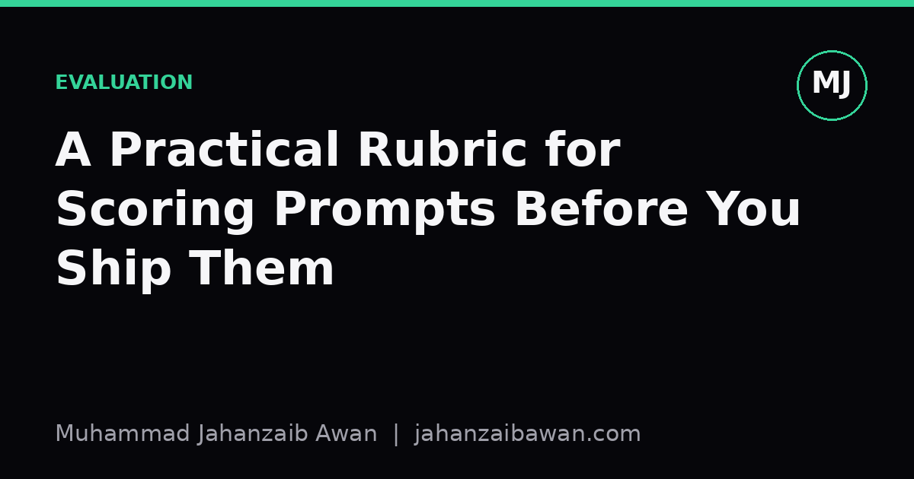

A Practical Rubric for Scoring Prompts Before You Ship Them
Prompts are code with vague syntax, so they deserve the same scepticism you'd give any untested function. Here is a scoring rubric I actually use before a prompt goes anywhere near production.

Why prompts need grading, not vibes
Most teams treat a prompt as finished once it produces a plausible-looking answer on the first try. That is the same mistake as accepting code because it compiled. A prompt is an interface between unstructured human intent and a model that will happily guess what you meant if you leave gaps. The gaps do not show up in a quick demo; they show up three weeks later when a user phrases a request slightly differently and the output quietly degrades.
I started keeping a short rubric after noticing that every prompt failure I'd debugged traced back to one of a handful of root causes: the instruction was ambiguous, the model had nothing to ground its answer in, or nobody had checked what happens on the edge cases. A rubric will not catch everything, but it forces you to ask the right questions before a prompt reaches a user, rather than after a complaint.
The point is not to turn prompt writing into bureaucracy. It is to replace a vague feeling of 'this looks fine' with a short checklist you can run in five minutes, the same way you would not merge a pull request without at least glancing at the diff.
The six criteria I actually check
Specification. Does the prompt state the task, the format, and the constraints explicitly, or does it rely on the model inferring them? A prompt that says 'summarise this article' is underspecified; one that says 'summarise this article in three bullet points, each under twenty words, using only information stated in the text' removes several degrees of freedom the model would otherwise fill in on its own, inconsistently, across runs.
Grounding. If the task depends on facts, does the prompt supply them, or is the model expected to recall them from training? A prompt asking for 'the company's refund policy' with no policy text attached is asking the model to hallucinate confidently. Grounding means pasting the relevant passage in and instructing the model to answer only from it, which is a cheap fix with a large payoff.
Format contract. Is the required output format unambiguous and machine-checkable? If downstream code expects JSON with three named fields, say so explicitly and give an example, don't just ask for 'structured output' and hope. I score this on whether a simple parser, not a human, could validate correctness.
Edge case coverage. Have you tried the prompt on inputs that are empty, very long, in a different language, or slightly hostile? A prompt that performs perfectly on five clean examples and has never seen an empty string or a ten-thousand-word document is not tested, it is demoed.
Failure behaviour. When the model cannot complete the task, does it say so, or does it fabricate an answer? A good prompt includes an explicit instruction for the 'I don't know' case: 'if the answer is not present in the text, respond with NOT_FOUND' is a single line that prevents a large class of silent failures.
Sensitivity. Does the output change meaningfully if you rephrase the instruction without changing its meaning, or reorder the examples? High sensitivity to superficial changes is a sign the prompt is relying on a fragile pattern match rather than a robust understanding of the task, and it predicts instability in production.
A worked example
Suppose the task is extracting a shipping address from customer emails for an order-processing pipeline. A first draft prompt might read: 'Extract the shipping address from this email.' Running it through the rubric quickly shows the cracks. Specification is weak: there is no definition of what counts as an address, no instruction on what to do with partial addresses, no stated output format. Grounding is fine, the email text is right there. Format contract is absent: sometimes the model returns a sentence, sometimes a list, sometimes it adds a friendly preamble like 'Sure, here is the address:' which breaks any downstream parser expecting clean text.
Edge cases expose more problems. An email that mentions two addresses, a billing one and a shipping one, causes the model to pick one at random or merge them. An email with no address at all produces a confident but fabricated one, because nothing in the prompt tells the model that silence is an acceptable answer. Sensitivity testing, trying three rephrasings of the instruction, shows the extracted address changes in about one in five cases on ambiguous emails, which is far too unstable for an automated pipeline.
The revised prompt addresses each point directly: it defines 'shipping address' explicitly and distinguishes it from billing address; it specifies the output as a JSON object with fields for street, city, postcode, and country, or the literal value null for any field not present; it includes an instruction that if no shipping address is mentioned, every field should be null rather than guessed; and it includes one worked example in the prompt itself showing the exact expected format. Re-running the same rephrasing test on this version shows the output format staying stable across all three rephrasings, with only the null-field handling varying in roughly one in twenty ambiguous cases, a meaningful improvement that would likely have gone unnoticed without the explicit test.
None of these changes required a different model or a bigger context window. They required treating the prompt as a specification document rather than a suggestion, and testing it the way you would test any other piece of logic that sits between a user and a database write.
Making it a habit, not a one-off
The rubric is only useful if it is cheap enough to run every time, so keep it to a short checklist rather than a formal document. For each prompt heading to production, write down a one-line answer for specification, grounding, format contract, edge cases, failure behaviour, and sensitivity. If any answer is vague, that is the item to fix before shipping, not after.
It also helps to keep a small set of adversarial test inputs alongside the prompt itself, the same way you'd keep unit tests next to a function: an empty input, a maximally long input, an ambiguous input, and one that should trigger the explicit failure path. Running these before every change to the prompt catches regressions that a single happy-path example would never reveal.
The underlying lesson is that prompts behave like interfaces, and interfaces deserve scrutiny proportional to how much they are relied upon. A rubric will not make a prompt perfect, but it reliably turns a vague first draft into something you can defend when someone asks why the system behaved the way it did.